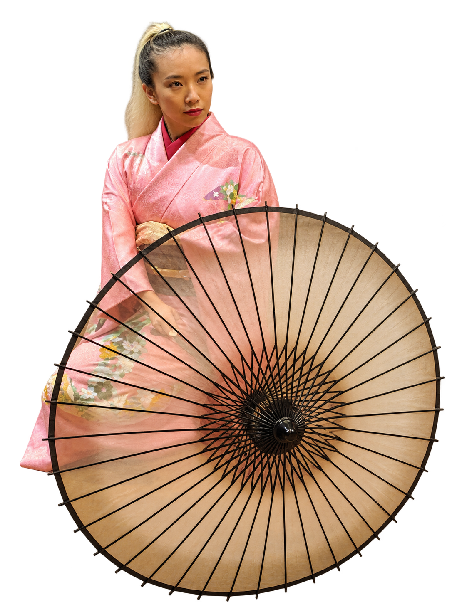

Beyond work
A little more
I love getting lost in a craft—learning its traditions, practicing the details, and discovering how much there is still to explore.
Art, practice & patience
Always a student
of the craft.
I’m a former champion in kyūdō, the Japanese art of archery. Its focus and precision are part of what draws me to practices that reward patience and dedication.
I practice and regularly perform nihon buyō in the Onoe-ryū tradition—a form of Japanese classical dance with roots in kabuki theatre, expressed through precise gestures and graceful movement. With the school, I’ve performed at the Kennedy Center and at events across Virginia, Washington, DC, and Maryland. I also actively help run the school’s dance workshops and demonstrations across the region, sharing the practice with new audiences. I love the care that goes into every gesture, and the chance to share a living tradition with an audience.
I’m also an Otakon regular. It’s another place where my love of art and craft comes together—in cosplay, shared enthusiasm, and the creativity of the community.
The school’s wider performance history includes the Smithsonian, Washington National Cathedral, the Embassy of Japan, the Library of Congress, and George Mason University’s Harris Theater.
